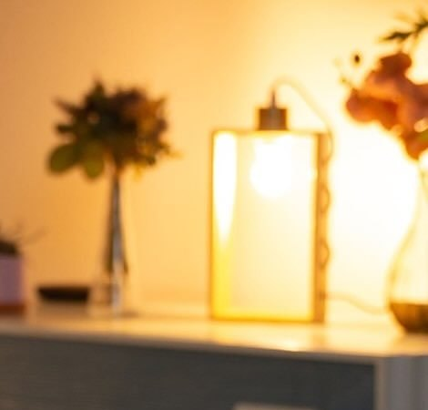

Rita Barroca · PsicólogaConhece-te. Cuida-te.
Toca na borboleta
Online · CP 26887
ERS E164727
Conhecer-te é perceber o que sentes e o que precisas. Cuidar-te é fazer alguma coisa com isso. Uma sem a outra fica sempre a meio do caminho.
Duas asas. É assim que a Rita pensa o acompanhamento.
Para te ouvires melhor, às vezes é preciso alguém que ouça contigo.
A Rita Barroca é psicóloga clínica e formadora certificada. Acompanha pessoas que querem conhecer-se melhor e cuidar de si com mais gentileza, em consulta online, com uma equipa dedicada ao lado.
Apresentação, percurso e forma de trabalhar: a confirmar com a Rita
- Mais de 500 pessoas transformadas
- Como a Rita escreve no seu perfil.
Uma pergunta de cada vez. Escolhe um lado.
Duas asas, dois baralhos. Vira a carta, lê devagar e responde só para ti. Se uma pergunta ficar a fazer eco, podes levá-la para a conversa com a Rita.
Exercício de reflexão. Não substitui acompanhamento psicológico nem é um diagnóstico.
Do primeiro passo às tuas próprias asas.
Cada percurso é diferente, mas há um caminho que se repete: começar pela conversa, conhecer, cuidar e, aos poucos, seguir com mais ferramentas tuas.
-
Passo 1
Primeira conversa
Contas o que te trouxe aqui. Sem pressa, sem julgamento e sem teres de ter tudo arrumado.
-
Passo 2
Conhecer-te
Percebemos o que sentes, o que repetes sem dar por isso e o que já não te serve.
-
Passo 3
Cuidar-te
Mudanças pequenas que cabem na tua vida real, uma de cada vez e ao teu ritmo.
-
Passo 4
Voar com as tuas asas
Com mais ferramentas, vamos decidindo juntos quando e como continuar.
Número, duração e frequência das sessões: a confirmar com a Rita
Também ensino a cuidar.
A Rita é formadora certificada. Os temas, formatos, datas e valores das formações vão ser definidos com ela. Estes são só exemplos de como esta secção pode ficar.
- 01Workshopsa confirmar
- 02Formação para equipas e empresasa confirmar
- 03Palestras e sessões em grupoa confirmar

O que costuma perguntar-se.
Respostas ilustrativas. A Rita confirma cada uma antes de o website ser publicado.
Como funcionam as consultas online?
Preciso de ter “um problema” para começar?
Quantas sessões vou precisar?
O que partilho fica confidencial?
E se estiver numa situação de crise?
Vamos conversar?
Escreve-me com calma. Não precisas de explicar tudo: basta dizeres o que te trouxe até aqui.
- ConsultasOnline
- Emaila confirmar com a cliente
- Telefonea confirmar com a cliente
- Instagrama confirmar com a cliente
- Horárioa confirmar com a cliente